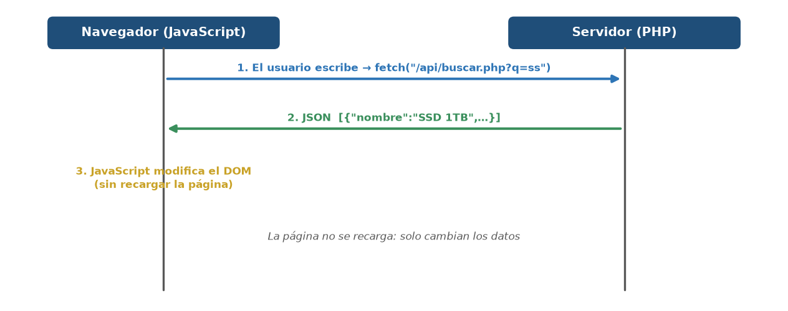
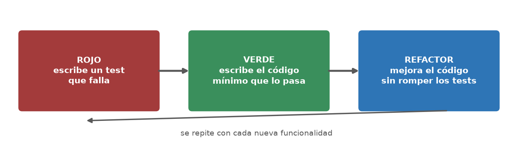
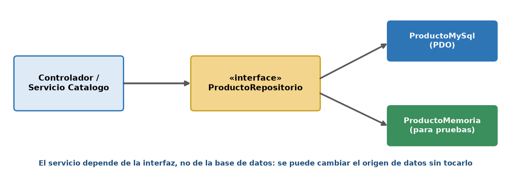
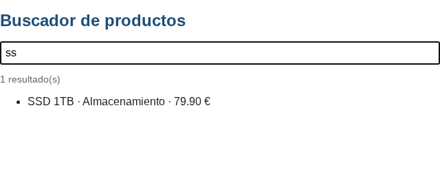
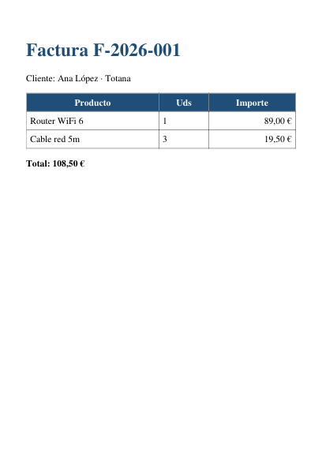
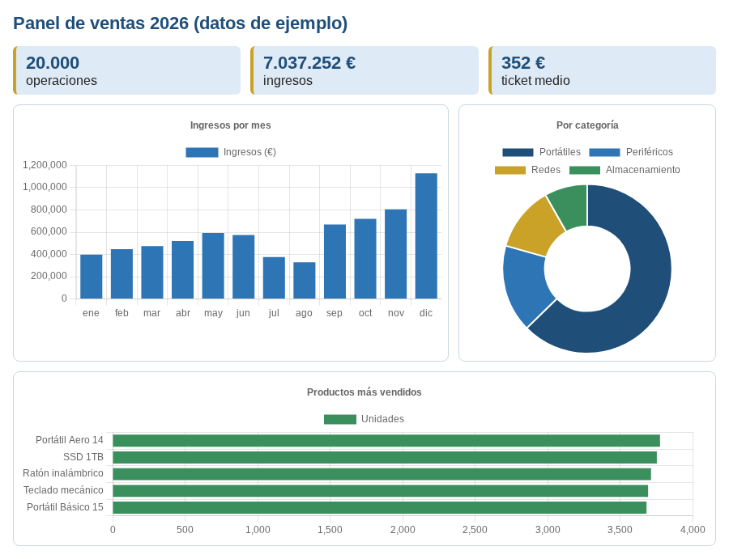
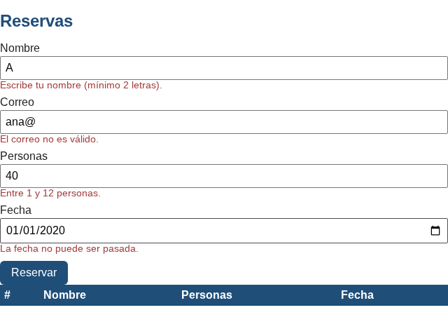
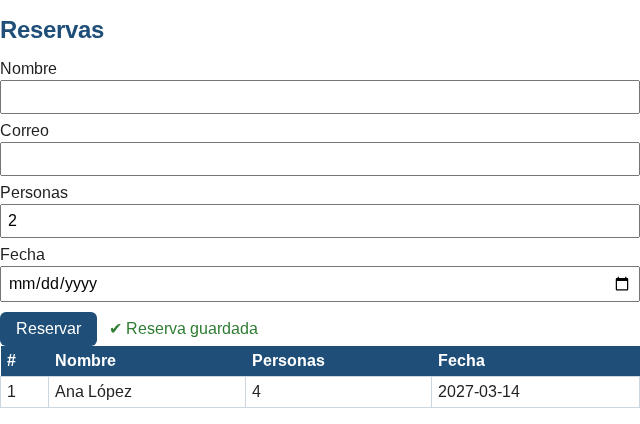
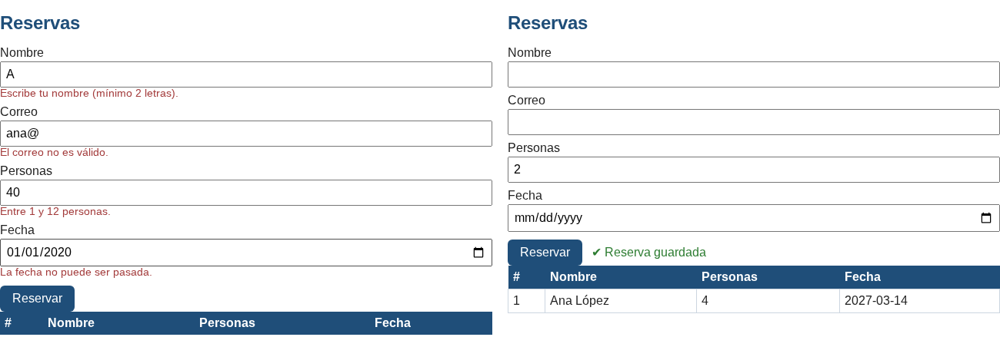

Inicio › UT7
Qué se trabaja
- Peticiones AJAX y aplicaciones híbridas.
- Librerías con Composer (PDF, hojas de cálculo, fechas, logs) y pruebas automáticas.
Pruébalo en el laboratorio
UT7 · Una prueba automática casera (estilo PHPUnit)
Prueba también las demos JavaScript (buscador AJAX).
Figuras y capturas








